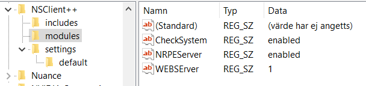

Navigation
- index
- next |
- previous |

- NSClient++ »
- 0.5.0
- Documentation »
The NSClient++ settings store is a hierarchical tree structure with key value pairs. Traditionally this is stored in a flat ini-style file where the “paths” are defined as sections. But there are other options as well and for instance the registry is another common place to store settings. With the new configuration UI in 0.4.3 it is simpler to manipulate the settings if they are store in the registry and thus probably a better place to keep them.
Which keys are available and what they mean are describe by the modules which use the various keys. Thus it the place to find the documentation for the various configuration options are in the reference section of the documentation. Where it is split by module.
Another really useful feature of the settings in NSClient++ is the ability to include various other settings. This is very flexible and you can include ini file from the registry and vice versa.
The way to include a file (if you are using in ifles) is to add a key under the /include section.
including file:
[/include]
foo=foo.ini
You can include any number of files registry or other stores. and they will be instantiated in a tree structure with a parent child relationship. Important to note here is that the first found key will be used. So parents will override children.
And example of this:
nsclient.ini:
[/include]
client=client.ini
[/test]
key1=This values comes from nsclient.ini
client.ini:
[/include]
baseline=baseline.ini
[/test]
key1=This values comes from client.ini
key2=This values comes from client.ini
baseline.ini:
[/test]
key1=This values comes from baseline.ini
key2=This values comes from baseline.ini
key3=This values comes from baseline.ini
in the above example the values of /test keyx will be:
- key1=This values comes from nsclient.ini
- key2=This values comes from client.ini
- key3=This values comes from baseline.ini
This can be very useful to distribute a baseline configuration for a company or monitoring product. Then all “machine specific customization” would go into the nsclient.ini config where as client.ini would be reserved for the clients global config. And finally baseline.ini would be monitoring tool specific configuration.
Settings are historically stored in an ini file but you can store settings in many other locations as well. While the most obvious one to use is the registry there are other olptions as well.
Ini file are the simplest form of configuration and also the default though on windows registry is probably a better option. The files are textfiles following the ini file format where yu have sections in brackets [] and key key = values.
sample.ini:
[/section/child/section]
key=value
To use an ini file you prefix the settings url with ini:// then you can use various folder strings or specify a relative or absolut path to the file.
examples:
# Use the relative file foo.ini
nscp settings --migrate-to ini://foo.ini
# Use the relative file foo.ini in a subfolder called conf
nscp settings --migrate-to ini://conf/foo.ini
# Use a file stored in the profile folder (on windows): C:\Documents and Settings\All Users\Application Data\NSClient++
nscp settings --migrate-to ini://%(common-appdata)/NSClient++/nsclient.ini
Registry is only avalible on windows and using them on windows is recomended as it integrates better with windows and windows managament tools where you can push configuration changes and similar things. As the registry is naturally a tree structure we use folders as section and keys and values for keys and values.
To use an ini file you prefix the settings url with ini:// then you can use various folder strings or specify a relative or absolut path to the file.
examples:
# Use the default registry location
nscp settings --migrate-to registry
# Use HKEY_LOCAL_MACHINE/software/NSClient++ to store configuration
nscp settings --migrate-to registry://HKEY_LOCAL_MACHINE/software/NSClient++
Registry is a “new” feature this means both that I am interested in how to evolve the feature but also that it does “something” not nesscerily something usefull. The registry is a regular ini file (see above) ex cept that it is loaded remotely and refreshed periodically. The refresh period is configurable and if the file has changed NSCLient++ will reload and re-read the new configuration. If it is not possible to fetch the latest configuration NSClient++ will keep using the last one it recieved.
examples:
# Use remote configuration.
nscp settings --switch http://www.myserver.com/nsclient.ini
In the nsclient.ini file you can specify a series of attachments which will be downloaded (for instance scripts).
Adding a script:
[/attachments]
scripts/myscript.bat = http://www.myserver.com/myscript.bat
NSClient++ has some fesature to help work with settings stores. All of this is performed via the settings sub command:
nscp settings --help
Migrating settings from a ini file to the regstry can be done with the migrate-to command:
nscp settings --migrate-to registry
This will move all data from the settings file and store it in in the registry and then sertup NSClient++ to use the registry instead of the ini file.
You can also switch settings store (without migrating data):
nscp settings --switch registry
The effect is similar in that NSClient++ will start using the registry but you have to add the keys to the registry manually.
To show the current settings store view can run:
$ nscp settings –show INI settings: (ini://${shared-path}/nsclient.ini, C:sourcebuildx64dev/nsclient.ini)
The default way for NSClient++ to find your settings files is via the boot.ini file. If you want to override this, for instance you want to use multiple NSClient++ from the same folder, you can do this via the –settings option:
nscp test --settings nsclient2.ini
You can do this for the service as well by editing the service start command.